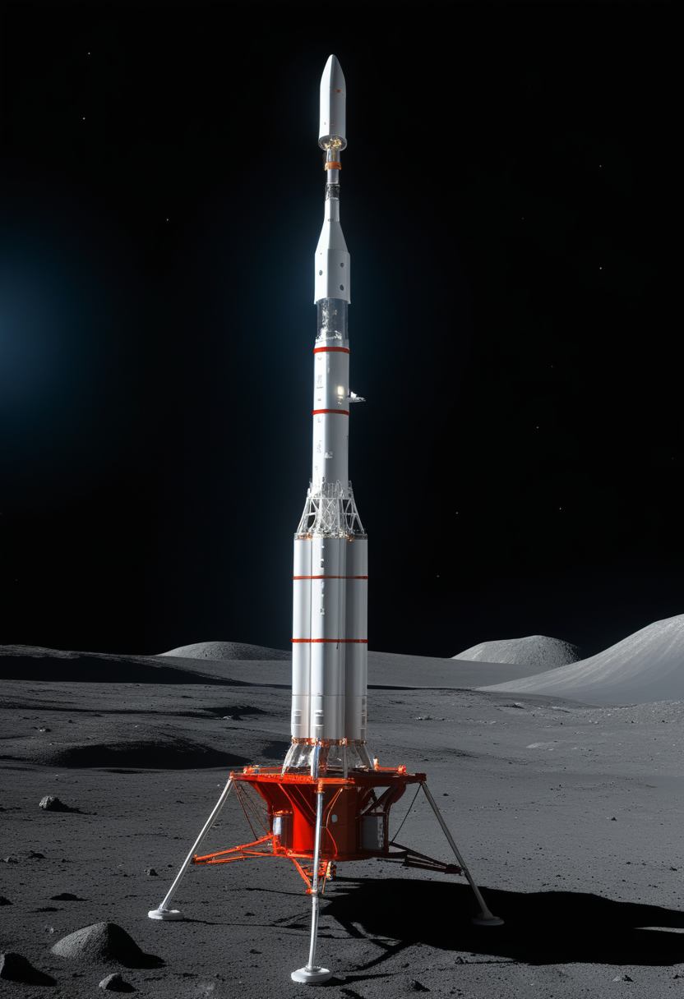
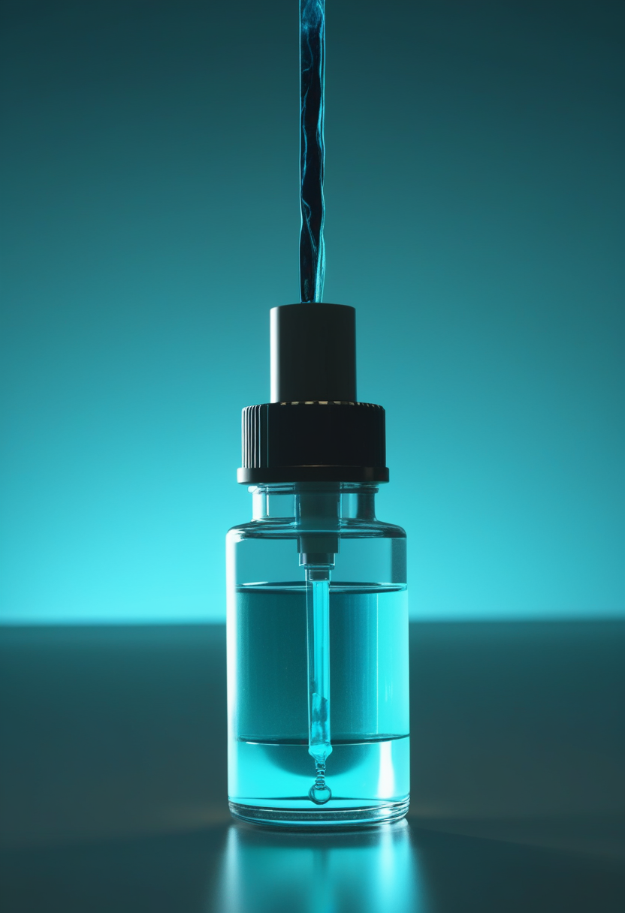
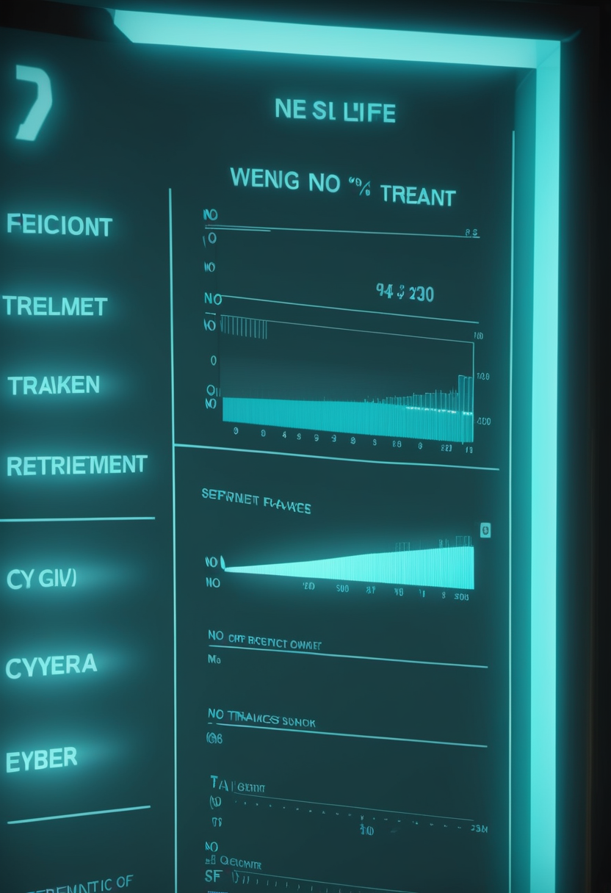
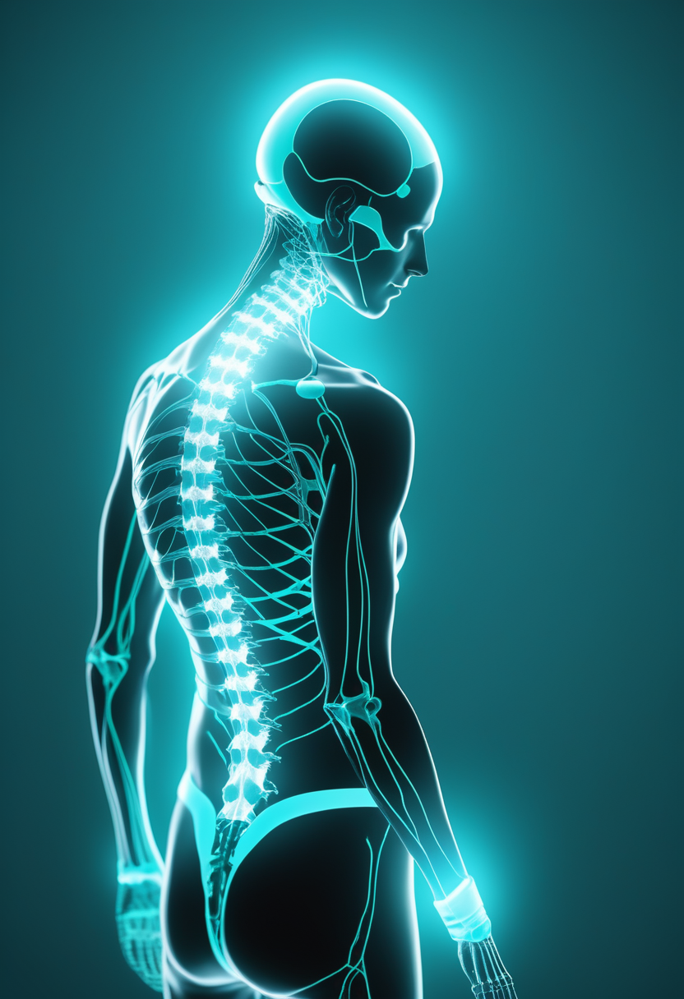
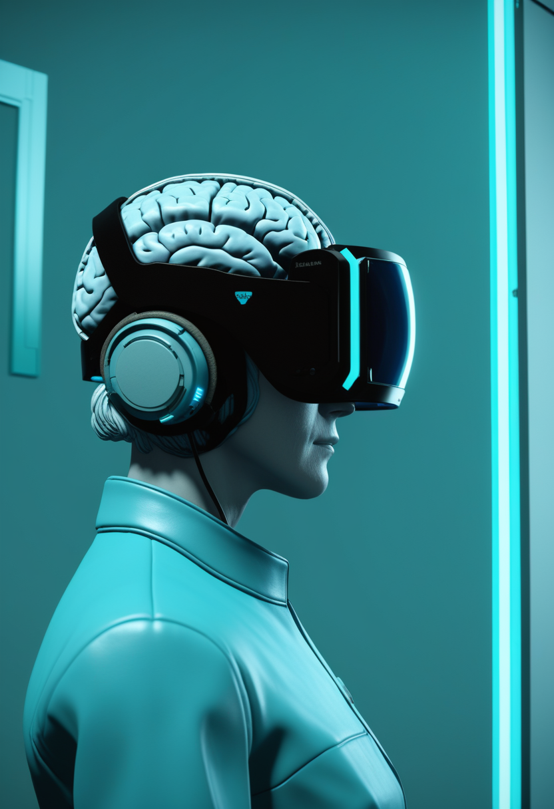
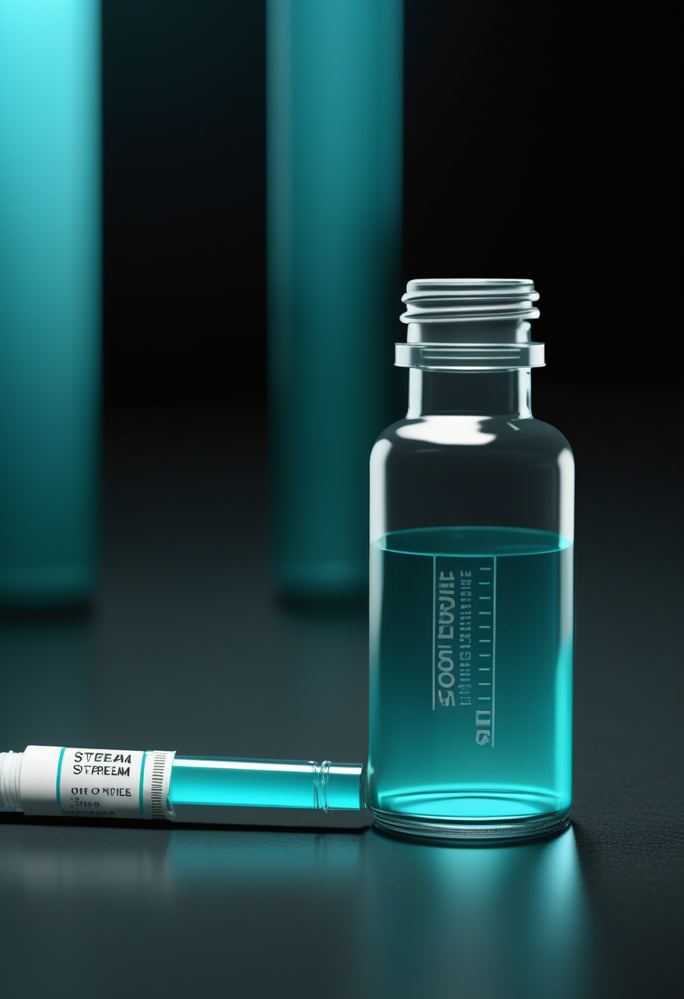
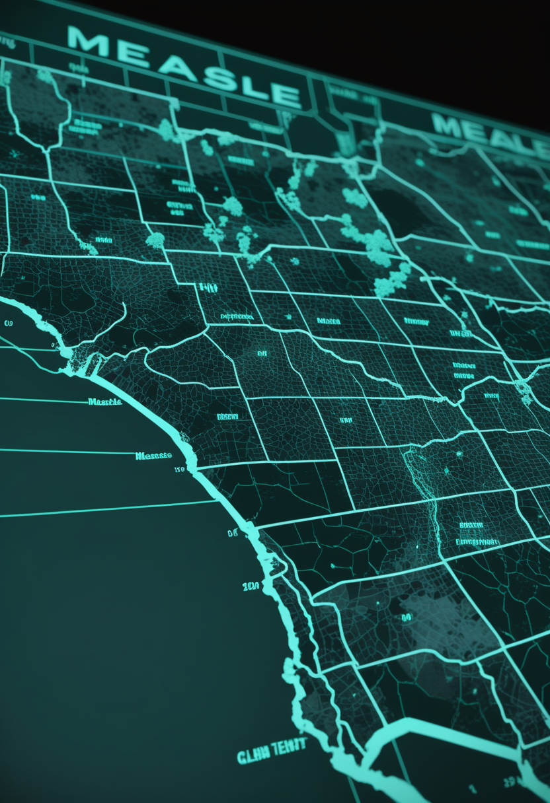
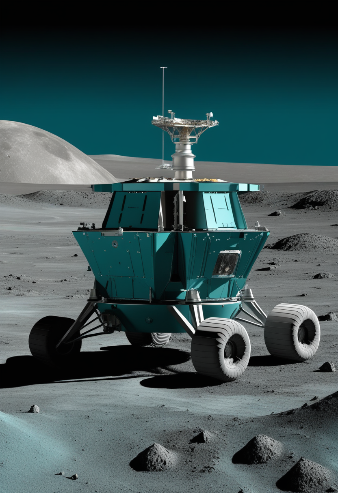
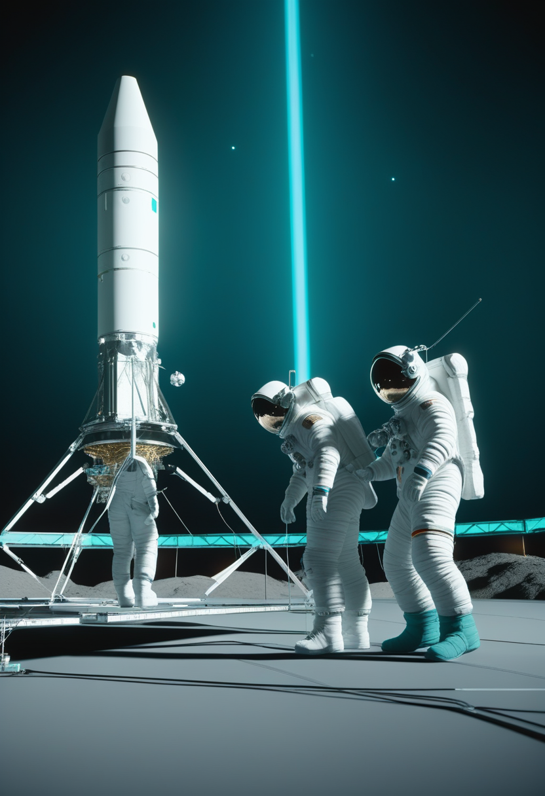

土曜日の便り。国際調整グループ(ICG)は8月20日、コンゴ民主共和国政府の要請を受けてErveboワクチン7万回分の即時放出を決めた。うち5万回は医療従事者と最前線対応者の接種に、2万回はBundibugyo型エボラへの有効性を確かめる無作為化第3相試験に充てられる。史上最大規模のコンゴ流行に、初めて『ワクチンという手札』が現実に配られた形だ。ECDCの8月20日集計では確定5,290例・死者2,516人に達し、本紙前号比で約80例・40人の積み増しとなった。命の章では、トルコの新生児スクリーニング全国データが早期治療の効果を裏付けつつ、診断から治療開始まで平均25.2日と現行指針の窓を超える遅れも明らかになった。自由の章では、脊髄を360度包む極薄電極が運動・感覚・内臓信号を1枚のデバイスで聞き分け、中国が埋込み型BCIを医療機器として世界初承認したことが制度面の転換点として浮かび上がった。畏敬の章では、いて座A*のごく近くを回る最速の星S301がブラックホールの自転そのものを測る手がかりとなり、嫦娥7号は8月24日の打ち上げに向け月南極シャクルトンクレーターを目指す準備を整えた。そして美の章では、脳のデジタルツイン研究36本の棚卸しと、意識障害の予後を『双子の脳』で読む試みが、人間のデジタル化を思弁から具体的な臨床タスクへと引き寄せている ― 危機への手当てと、遠い宇宙・脳への問いが、同じ土曜日の朝に並走した。

国際調整グループ(ICG)は8月20日、コンゴ民主共和国政府の要請を受けてErveboワクチン7万回分の即時放出を決めた。うち2万回分は、このワクチンが本当にBundibugyo型エボラに効くのかを確かめる無作為化第3相試験に、残り5万回分は医療従事者と最前線対応者の接種に充てられる。WHOとアフリカCDCは同日、この配分を歓迎する共同声明を発表した。ErveboはZaire型エボラウイルス向けに承認されたワクチンで、今回の流行の原因であるBundibugyo型に対するヒトでの有効性はまだ分かっていない。WHOの候補ワクチン優先度に関する技術諮問グループが交差防御を示唆する新しい証拠を検討したうえで、流行のさなかに無作為化試験を組むことを勧告したのが今回の判断につながった。史上最大規模のコンゴ流行に、初めて『ワクチンという手札』が現実に配られた。

2022年5月に全国新生児スクリーニングを始めたトルコの多施設データが公表された。SMN2を2コピー持つ乳児258人がヌシネルセンの投与を受け、うち96人はスクリーニングで見つかった児だった。スクリーニング群は治療開始時点のCHOP-INTEND(乳児の筋力・運動を測る標準的な指標)が平均35.5点と、非スクリーニング群の19.4点を大きく上回った。ただし課題も残る。診断から治療開始までは平均25.2日かかっており、現行指針が求める14〜21日の窓を超えていた。見つける仕組みは整い、次の律速は治療につなぐ段取りである。
遺伝子治療オナセムノゲンアベパルボベク(ゾルゲンスマ)を受けたあと、機能の改善が頭打ちになったり低下したりする子どもがいる。この空白を埋めるため、リスジプラム(エブリスディ)の安全性と有効性を検証する第4相試験が登録を開始した。スポンサーはホフマン・ラ・ロシュで、2歳未満の28人を目標とする。先行する多施設の後ろ向き症例集積では、ゾルゲンスマ後にリスジプラムを開始した14人全員で運動機能が改善し、うち6人は呼吸機能と嚥下障害の両方でも改善がみられている。
SMA医療の課題は『治療がない』から『治療をいつ、どの順で重ねるか』へ移った。新生児スクリーニング後の25.2日という遅れも、遺伝子治療後の頭打ちも、どちらも同じ問い ― タイミングの設計 ― の別の顔である。

ヒューストン・メソジスト病院とケンブリッジ大学のチームが、脊髄を円周状に包み込む極薄の硬膜内電極アレイを開発した。げっ歯類とブタのモデルで、運動意図のデコード、感覚入力の分類、内臓からの求心性信号の判別を1枚のデバイスで同時にこなした。これまでの治療は運動・感覚・自律機能のどれか一つに絞るのが常だったが、単一のインプラントで複数の失われた機能を取り戻せる可能性を示した。共同主導はDamiano Barone氏(ヒューストン・メソジスト)とGeorge Malliaras氏(ケンブリッジ大)。

技術の進み方と同じくらい効いてくるのが制度だ。中国は2026年4月、埋込み型BCIを医療用途の機器として承認した世界初の国となった。臨床試験の枠組みの外で患者が使える道が開いたことになり、米国勢がいずれも研究プロトコルか拡大アクセスの下にとどまるのとは対照的な構図になっている。技術の成熟だけでなく、誰がどの条件でその技術を使えるかという制度設計の競争が、次の局面として動き出している。
ハードは『1機能から多機能へ』、制度は『試験から実用へ』動き始めている。次の論点はもう性能ではなく、誰がどの条件で使えるかに移りつつある。

WHOとアフリカCDCは8月20日、ICGによるErvebo 7万回分のコンゴ割当を歓迎する共同声明を出した。WHOの候補ワクチン優先度に関する技術諮問グループが、Bundibugyo型への交差防御を示唆する新しい証拠を検討したうえで、流行のさなかに無作為化試験を組むことを勧告したのが今回の判断につながっている。裏を返せば、効くという確証はまだない。2万回分はその答えを出すために使われ、残る5万回分は最前線で戦う医療従事者と対応者自身を守るために使われる。
ECDCが8月20日にまとめた最新の集計(データは8月19日まで)では、確定5,290例・関連死2,516人。前報からは確定81例(イトゥリ56、北キブ18、オー・ウエレ7)と死亡40人の増加で、本紙前号(5,208例・2,476人)からは約80例の積み増しとなった。イトゥリ州が4,447例・1,984人と最も重く、36保健区のうち28区に及ぶ。北キブ州は663例・452人。隔離入院中は837人、回復は1,152人、接触者の追跡率は82.9%。コンゴ史上最大、世界でも2番目の規模である。

米CDCの8月13日時点の集計で、2026年の確定麻疹は2,566例。過去30年超で最多だった2025年の2,289例をすでに上回り、1991年以来の水準となった。今年の新規アウトブレイクは38件で、確定例の94%(2,566例中2,407例)が集団発生に関連する。患者の93%はワクチン未接種か接種歴不明、7%が入院、死亡例は報告されていない。国内の検証委員会が8月中旬にCDCデータを審査し、汎米保健機構(PAHO)の地域検証委員会が11月に『排除状態』の判定を下す。
前号では『拡大速度に追いつけるか』が焦点だったが、本号でワクチンの実配分という次の段階に入った。ただし2万回分は治験用であり、Bundibugyo型への防御はこれから検証される。効果判定が出るまでの数週間が、この流行の分水嶺になる。
欧州南天天文台(ESO)の超大型望遠鏡干渉計(VLTI)が、いて座A*のごく近くを回る新しい星S301を捉えた。速度は秒速約25,000km(光速の約8%)、公転周期はわずか8.7年で、これまで知られたどの星より短い。極端な楕円軌道を描き、最接近時にはブラックホールのシュワルツシルト半径の約136〜142倍まで近づく。ここまで近いと星はブラックホールの『自転そのもの』の効果を感じ取るため、2周ぶんの軌道を追えば、いて座A*のスピンを直接決められる見込みだ。静穏な銀河の中心ブラックホールでは初の測定になる。

中国の嫦娥7号が、北京時間8月24日に文昌発射場から長征5号で打ち上がる。周回機・着陸機・探査車・ホッパー(跳躍機)の4要素構成で、国際搭載6件を含む計21の科学ペイロードを積む。着陸目標は月南極シャクルトンクレーターの縁付近。周回機は数カ月にわたり月軌道で運用され、年末に着陸機を分離して降下を試みる計画だ。狙いは南極域の環境と資源、とくに水の探査で、2030年を目標とする中国初の有人月着陸への地ならしでもある。
D-Wave Quantumが8月5日、Nature誌に『An entangling gate for dual-rail erasure qubits』を発表した。デュアルレール型の超伝導量子ビットで、約500ナノ秒という速いゲート時間と約99.9%の2量子ビット忠実度を、ハードウェアレベルの誤り検出を保ったまま実現したという。同社は誤り訂正の階層を一段上げるごとに論理誤り率を最大10分の1にできると見積もり、2032年に100論理量子ビット機を掲げる。今年1月に5億5,000万ドルで買収したQuantum Circuits社の技術に基づく成果である。

国際宇宙ステーションでは8月25日、NASAのAnil Menon氏とESAのSophie Adenot氏が船外活動に出て、前回時間切れになった地上通信アンテナの交換を仕上げる。同じ週、ローマン宇宙望遠鏡は8月20日に打ち上げ予行演習を完了し、8月30日午前7時26分(米東部夏時間)、ケネディ宇宙センターLC-39Aからファルコン・ヘビーで飛び立つ予定だ。老朽設備の地道な修理と、新しい目の打ち上げが、同じ来週に重なる。
極端に近い軌道がブラックホールの自転そのものを測る手がかりになり、月の南極を目指す探査機は着陸地点まで絞り込まれ、老朽アンテナの修理と新しい宇宙望遠鏡の打ち上げが同じ来週に重なる ― 畏敬の章が今日並べたのは、途方もない距離の謎も、地道な軌道上の作業も、同じ緻密な計画の上に成り立っているという事実だった。
Biomedical Engineering Letters誌の系統的スコーピングレビューが、6つのデータベースを創刊から2026年2月まで検索し、神経疾患のデジタルツイン研究36本を同定した。論文数は2023年以降に急増しており、対象疾患はアルツハイマー病(14本)と脳卒中(12本)が最多。手法はデータ駆動・機械学習型が中心で、メカニズム型とハイブリッド型が続く。応用は治験の最適化、疾患進行のモデル化、リスク予測、個別化治療の四つに集約された。
意識障害(DOC)患者の予後予測は臨床の難所であり続けてきた。鄭州中心医院を中心とするグループは、転帰の異なるDOC患者ごとにデジタルツイン脳モデル(DTBM)を構築し、そのモデルパラメータとモーダル可制御性の特徴量からサポートベクターマシンで転帰を分類、さらに6カ月後のCRS-R(改訂昏睡回復スケール)スコアを回帰予測した。局所的なモデルパラメータを使ったほうが成績が良かったという。意識回復の神経メカニズムに、計算モデル側から手をかけた研究だ。
オークランド工科大学の研究者が7月13日、動物福祉で使われる『5つの自由』をAIエンティティ向けに翻案した倫理枠組みをFrontiers in Artificial Intelligenceに発表した。AIに意識があるかどうかの決着を待たずに、不確実性のもとで扱いの基準を先に設計しておこうという発想である。人間をデジタル化する議論と、デジタルなものを人間の側に迎える議論は、同じ問いの表裏になりつつある。
『人間のデジタル化』は思弁の段階を離れ、予後予測という具体的な臨床タスクに落ちてきた。同時に、モデル化される側の尊厳をどう守るかという問いも、同じ速度で立ち上がっている。
国際調整グループ(ICG)は8月20日、コンゴ民主共和国政府の要請を受けてErveboワクチン7万回分の即時放出を決めた。うち5万回は医療従事者と最前線対応者の接種に、2万回はBundibugyo型エボラへの有効性を確かめる無作為化第3相試験に充てられる。史上最大規模のコンゴ流行に、初めて『ワクチンという手札』が現実に配られた。ECDCの8月20日集計では確定5,290例・死者2,516人に達し、本紙前号比で約80例・40人の積み増しとなった。命の章では、トルコの新生児スクリーニング全国データが早期治療の効果を裏付けつつ、診断から治療開始まで平均25.2日という遅れも明らかになり、遺伝子治療後の頭打ちを埋めるリスジプラム上乗せ試験も始動した。自由の章では、脊髄を360度包む極薄電極が運動・感覚・内臓信号を1枚のデバイスで聞き分け、中国が埋込み型BCIを医療機器として世界初承認したことが制度面の転換点として浮かび上がった。畏敬の章では、いて座A*のごく近くを回る最速の星S301がブラックホールの自転そのものを測る手がかりとなり、嫦娥7号は8月24日の打ち上げに向け月南極シャクルトンクレーターを目指す準備を整え、ISSの船外活動とローマン宇宙望遠鏡の打ち上げが同じ来週に重なる。そして美の章では、脳のデジタルツイン研究36本の棚卸しと、意識障害の予後を『双子の脳』で読む試みが、人間のデジタル化を思弁から具体的な臨床タスクへと引き寄せている ― 危機への手当てと、遠い宇宙・脳への問いが、同じ土曜日の朝に並走した。
では、また明日の朝に。 — JaH